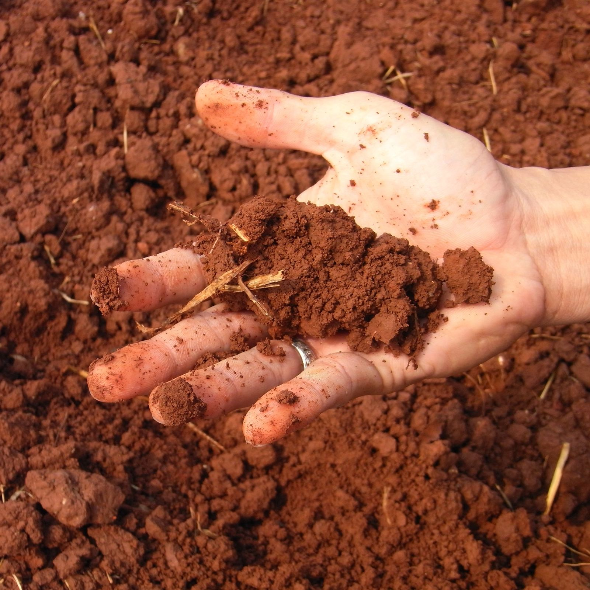
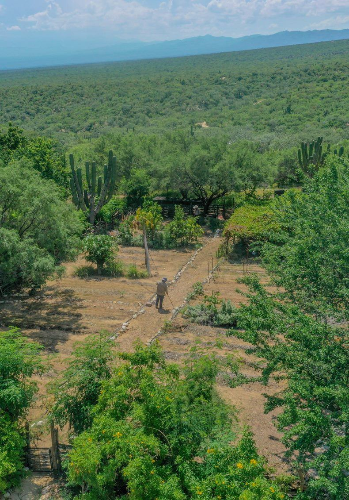

PRACTICE
Putting living soil to work
Field trials, restoration efforts, and partnerships where the Foundation and its practitioners apply the soil food web, documented as they grow.

Projects section removed Sep 8 (Evan), restore when the projects database has real entries.
CASE STUDIES
Documented results, one site at a time
Each case study pairs a grower’s story with the data behind it, where they started, what they practiced, and what was measured.
-
Roberto Silva Piura, Peru Agricultural -
Cory Miller Montana, USA Agricultural -
Nick Tomasini Portland, Oregon Soil Food Web Consultant
The practitioners' own films, from the Foundation's Vimeo library.
Read the Sweden market garden case study
Three of the launch cases are here. Still open: a restoration-segment case, and the written detail behind each film, where they started, what they practiced and what was measured. Evan and Stephanie. Acreage figures the old site printed beside these names are left out under the claims rule.
Also filmed and available for later cards: Adam York, Illinois (792733797 / e809b1fad3); Jenn Sirp, California (812188293 / 6ed8f0fbef); Brian Vagg, Auburn, California (380296081 / 4da9889266); Keisha and Casey, Nevada City, California (380297602 / 7a71e6701c); Todd Harrington, Bloomfield, Connecticut (470279480 / 103139eeb8).
WORK WITH US
Accelerating understanding into action.
Whether you’re a farmer looking to implement the soil food web approach to cut back on synthetic inputs and build your natural soil fertility, a landowner looking to restore biodiversity and remediate contamination, or a school system wanting to incorporate our methodology into your curriculum, we welcome you to reach out to us.
-

Farm with biology
Cut back on synthetic inputs and build your natural soil fertility. We’ll connect you with our team and trained practitioners to plan, implement, and monitor the transition on your operation.
Find a trained professional near you → -

Restore your land
Bring biodiversity back to degraded sites and put biology to work on remediation, from gardens and smallholdings to large landholdings and public lands.
See how we partner on land and trials → -

Bring it to your classroom
Incorporate the soil food web methodology into your curriculum: for school systems, universities, and training programs.
See every program and price →
Start the conversation
routes to info@soilfoodweb.com, VERIFY routing/owner